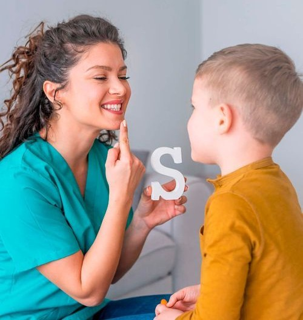
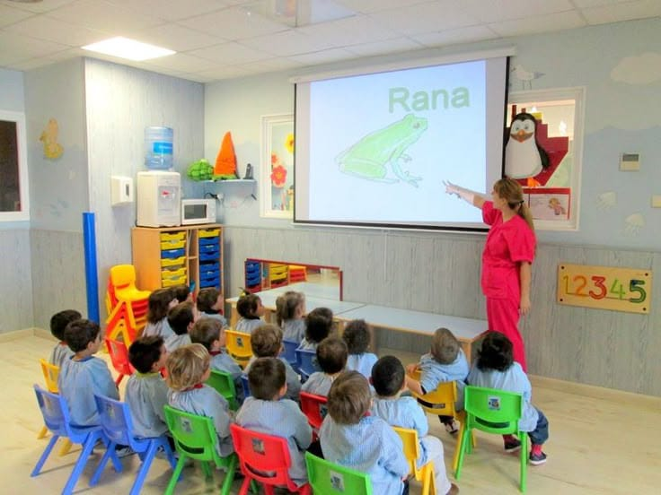
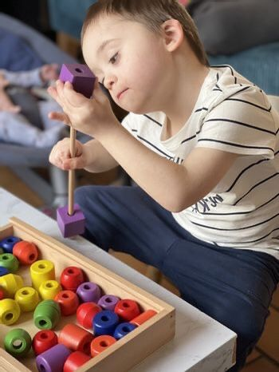
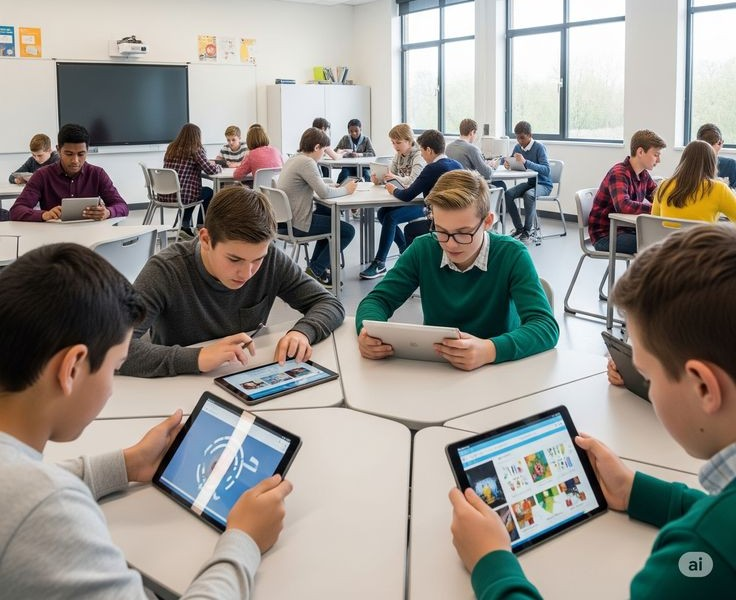
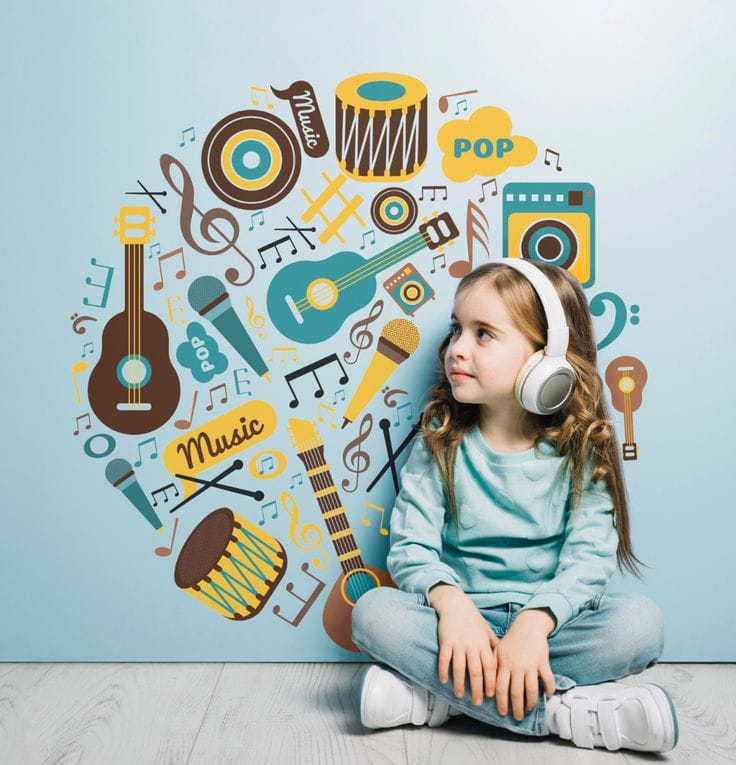
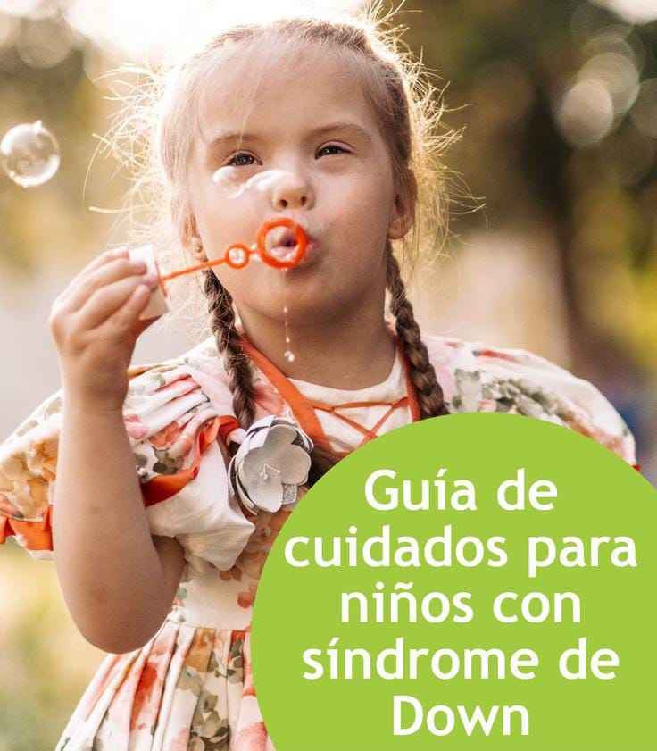
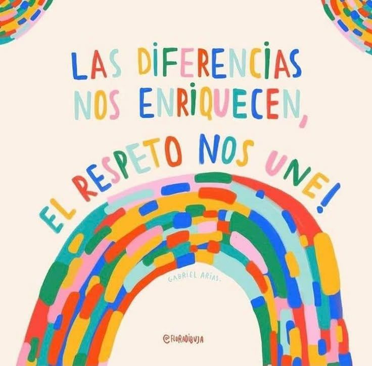
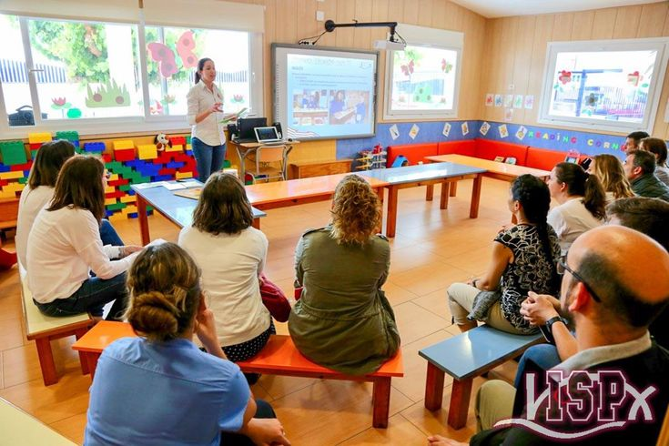

Lenguaje y Comunicación
1. Guía de ejercicios de logopedia para practicar en casa.
2. Tarjetas de vocabulario con imágenes.
3. Videos con ejemplos de ejercicios de pronunciación y respiración.
4. Canciones y cuentos cortos para estimular el habla.
Motricidad y Autonomía
1. Actividades para mejorar la motricidad fina y gruesa.
2. Fichas imprimibles con ejercicios de coordinación.
3. Consejos para fomentar la independencia en rutinas diarias (vestirse, comer, asearse).

Aprendizaje Escolar
1. Material didáctico adaptado para matemáticas y lectoescritura.
2. Juegos educativos para reforzar la atención y la memoria.
3. Recursos para trabajar colores, formas y números
Estimulación Temprana
1. Actividades para bebés y niños pequeños con síndrome de Down.
2. Juegos sensoriales para el desarrollo cognitivo y emocional.
3. Consejos para fortalecer la atención, el contacto visual y la curiosidad.
Educación Emocional y Social
1. Actividades para reconocer y expresar emociones.
2. Cuentos sobre amistad, respeto y convivencia.
3. Recursos para fortalecer la autoestima y la empatía

Tecnología y Aprendizaje Digital
1. Aplicaciones educativas recomendadas para personas con síndrome de Down.
2. Guías sobre el uso seguro de internet.
3. Recursos interactivos y juegos digitales adaptados.
Arte, Música y Creatividad
1. Actividades artísticas para estimular la expresión y la motricidad.
2. Ideas para talleres de pintura, danza y música inclusiva.
3. Beneficios del arte en el desarrollo cognitivo y emocional.
Salud y Bienestar
1. Consejos sobre alimentación equilibrada y hábitos saludables
2. Ejercicios físicos adaptados para diferentes edades.
3. Información sobre sueño, higiene y cuidado corporal.
Inclusión y Derechos
1. Información sobre los derechos de las personas con síndrome de Down.
2. Guías sobre inclusión escolar, social y laboral.
3. Materiales para promover la sensibilización y el respeto en la comunidad.
Orientación para Familias y Docentes
1. Guía para docentes sobre inclusión educativa.
2. Recomendaciones para acompañar el proceso emocional y social.
